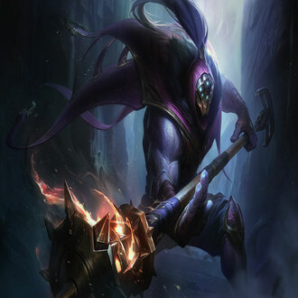

-
Jax
Descrição
Maior mestre de armas de Runeterra.Mas, quando o Vazio foi usado contra o Batalhão dos Ascendentes do império shurimane, Icathia foi destruída, deixando Jax sem um lar e sem um sentido para sua vida.
-
Yasuo
Descrição
Yasuo um ioniano extremamente determinado, também é um ágil espadachim que empunha o próprio ar contra seus inimigos.
-
Lucian
Descrição
Lucian, um Sentinela da Luz, é um caçador de espíritos imortais que usa suas pistolas relicárias para persegui-los implacavelmente e, por fim, aniquilá-los.
-
Lee Sin
Descrição
Um mestre das artes marciais ancestrais de Ionia, Lee Sin é um lutador de princípios fortes que canaliza a essência do espírito do dragão para enfrentar qualquer desafio.